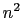

Given an atom D with a hydrogen H bonded to it and an atom
A which is not bonded to D, a hydrogen bond exists between
A and H iff the distance ||D-A|| < dist and the angle D-H-A < ang,
where ang and dist are user defined.
Only the selected atoms are searched, so both the donor and acceptor must be selected for the bond to be drawn. Also, you'll note that the above doesn't check the atom type of the donor or acceptor; the only criterion is if it already has or doesn't have a hydrogen.
One downfall of the current implementation is that it does an  search of the selected atoms so you probably don't want to show all the HBonds of a very large structure. Look for performance improvements in future versions of VMD.
If you choose an HBonds representation but fail to see any hydrogen bonds, it may be because the default Angle Cutoff and Distance Cutoff criterion in VMD are too small, so you might want to try increasing the angle value from 20 to 30 degrees and the distance value from 3 to 4.
The HBonds are drawn as dotted lines of a given width. The default Line Thickness is 1 but you should probably increase that to 2. On most SGIs you can't make it any wider than that, as described in the man page for linewidth. The bond is colored by the color associated with the acceptor.